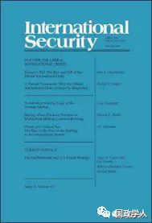
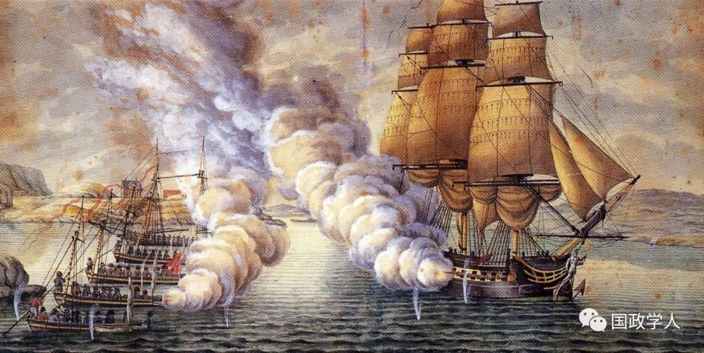
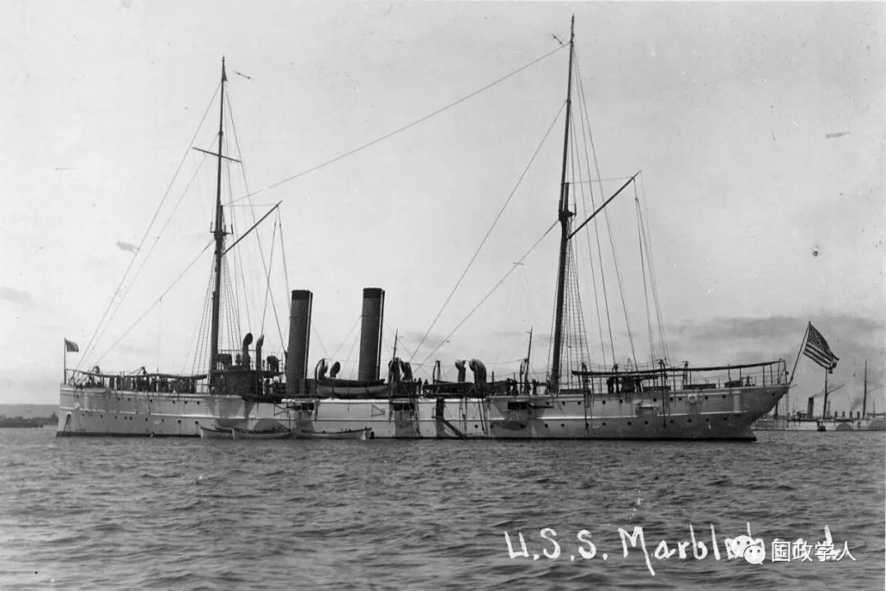

收录于合集

简 介
【作者】 J. C. Sharman：沙曼是剑桥大学政治与国际研究学部教授
【编译】 王俞欢
** 【校对】** 徐 琛
** 【审核】** 王国欣
【来源】 Sharman, J. C. (2019). Power and profit at sea: The rise of the west in the making of the international system. International Security, 43(4), 163-196.
【期刊】 《国际安全》（International Security）是国际和国家安全领域的同行评议顶级学术期刊。它成立于1976年，由哈佛大学贝尔弗科学与国际事务中心(Belfer Center for Science and International Affairs at Harvard University)编辑，麻省理工学院出版社(MITPress)每年出版四次。2018年影响力因子为4.135，在“国际关系”类别的85种期刊中排名第2位。

海军力量和商业利益：国际体系形成过程中崛起的西方
Power and profit at sea: The rise of the west in the making of the international system
J. C. Sharman
内容提要
14 世纪末以来，欧洲通过海上军事和商业活动创造了现代国际体系。然而， 大多数国际政治理论专注于陆上实力的研究，而非海军、海洋贸易和海洋本身。就历史而言，欧洲的海上扩张有两种特征：手段上以海军胁迫和力量投射为主； 目标上以控制海运贸易、扩大市场和主权债务偿还为主。本文认为， 欧洲对建立现代国际体系的突出贡献是组建 以 追求商业 收益为 目标的海军力量，即所谓的 “ 炮舰外交 ” 。作者通过探讨不同文明之间和不同时期国际政治中炮舰外交的本质和意义， 突出强调了商业和海军在欧洲国家建立国际体系过程中的关键作用。

文章导读
作者认为，长期以来 “炮舰外交”作为国家海洋力量的代表其研究遭到了忽视。以战争为手段来实现商业目的的“炮舰外交”是欧洲人特有的，与亚洲帝国有很大区别。本文首先介绍了印度洋和东亚地区的土著人之间的海运贸易，以此证明欧洲的与众不同之处。在上述地区的贸易活动中，没有人像欧洲人一样把海战当作促成贸易的手段，也没有人想通过军事控制海上航道来保障贸易。其次，本文通过历时性的分析，说明 从 15 世纪末到 18 世纪末，海洋外交被欧洲各种层次的行为体广泛运用，直到 19 世纪开始才被国家 所 垄断 。“炮舰外交”也带来了一系列二分法问题——高政治和低政治、战争和贸易、公有制和私有制以及企业与国家的关系等。尽管同一时期的亚洲帝国强大而且富有，但是欧洲人利用其独树一帜的海上优势和亚洲人对海洋力量的冷漠倾向，最终建立了现代国际体系。
**1
** 海洋力量的独特性
作者首先从历史角度分析了海上力量和陆地力量的差异。在18世纪初，英国的陆军每 1000 人才有一门大炮，而平均每 2.4个海军士兵就有一门大炮，尽管这并没有让国家力量对私人力量拥有更多优势。直到19世纪，在海上使用暴力仍为欧洲国家、私有商人、公民和各种混合主体所主导。其次，作者认为在重商主义、私掠船的广泛使用、对公海地区的主权要求以及英国与荷兰的东印度公司兴起的背景下，军事和商业、高政治和低政治的区分被弱化，在海上通过军事手段追求商业利益的“炮舰外交”越来越常见。
**2
** 亚欧对比:欧洲例外主义从何而来？
作者认为，利用海洋力量实现商业利益并非欧洲人的独创，但是其他地区的人民低估了海洋力量的重要性。在欧洲大航海时代到来之前的几个世纪，亚洲就和非洲拥有海洋贸易。在军事上，19 世纪之前海上力量的最大壮举是由亚洲人而非欧洲人实现的。从 1405 年到 1433 年，明帝国派出了 26000 多名士兵和水手持枪远征至东非和阿拉伯，这一数量级比几个世纪后的任何欧洲远征都要大。但是， 对海洋战争不感兴趣的亚洲统治者并没有争夺制海权 。接下来， 作者分析了欧洲的“例外主义”，对欧洲人主导建立的国际秩序做出了三种解释。首先，由于西欧人与东方商品隔绝，他们有更大的动机从事长途海运贸易，但是贸易中出现的不平衡现象促使他们使用武力来打开亚洲市场，以弥补贸易赤字。第二，欧洲国家体系的无政府状态导致国家间的战争频发，而保护商品和控制成本是商业得以生存和成功的决定性因素。欧洲人在这种思维的指导下通过海洋与东方交往，显得更加有侵略性。相比之下，亚洲的等级制度和霸权体系为商人提供了一个更加和平的贸易环境，“炮舰外交”没有实行的必要。第三，重商主义使得欧洲统治者和商人将商业与战略优先权视为互补的和不可分割的。东方统治者则认为战争是国家关注的事情，贸易是私人的追求，两者之间存在着很大分歧。

**3
** 炮舰外交的历史发展
作者在后面的部分回顾了英国东印度公司随着国家对暴力的垄断而衰落的过程，并且以鸦片战争为例，展现了 19
世纪英国的炮舰外交。英国东印度公司成立于1600年，至少在此后的一个半世纪里，该公司在东方地区扮演着如同葡萄牙、荷兰和其他欧洲国家的海洋与军事角色，直至最终在南亚建立了一个商业帝国。然而，从18世纪末开始直到19世纪早期，英国出台的一系列议会法案越来越倾向于将东印度公司视为英国政府的附属机构。 **东印度公司失去其具有主权性质的优先权并不是因为它被其对手 “国家”打败了，而是因为关于“公司是什么和应该做什么”的观念发生了变化。**进入19 世纪后，非国家行为体有组织地使用暴力的行为失去了合法性，许多历史学家认为私人海上力量的衰退与其说是功能性的原因，不如说是文化观念的变迁——军队越来越成为国家行使主权的象征。在出台了相关法规后，国家对大规模使用暴力的正当性和私人公司从事的商业活动进行了新的区分。然而，这种分离却并没有结束“炮舰外交”，因为在 19 世纪，私人利益集团依然可以通过游说本国政府对外国使用武力来实现自己的商业目标。体现这一结论的重要历史事件是两次鸦片战争。亚洲对欧洲长期的贸易顺差和英国、俄国、荷兰使者在北京遭遇的多次失败的通商尝试，导致英国政府不得不通过在印度种植鸦片，再销往中国来弥补贸易赤字。然而，清政府不久后即禁止了鸦片交易，这一举措给英国政府和商人都造成了巨大的损失，他们都无法接受这样的结果，尤其是大量鸦片被清政府烧毁之后。除此之外，外国人与中国官方的直接接触是很困难的，英国政府的商业和外交联系被严格限制在广东和澳门。在19世纪30年代，随着国家垄断主权原则的确立，与中国的外交关系被从东印度公司手中收回到了政府手中。 **鸦片战争既是先前炮舰外交的延续，也发生了许多变化 ——从重商主义变成了自由贸易帝国主义，英国政府发动战争主要是出于商业目的。**清政府在很长一段时间内不确定自己身处商业战争还是真正的战争中，因为它并不像欧洲人那样习惯商业和战争的融合。与传统里商业公司作为战争主体不同，鸦片战争是由英国政府主导的、皇家海军进行的。
作者认为， 19 世纪下半叶，炮舰外交主体发生的变化不仅与人们对 “ 国家 ”
观念的认知改变有关，也与航海技术、海军武器的快速发展相关。 当人们对国家行为预期的“规范”变化之后，通过战争追求利益就成为了国家独有的权利，有关战争的观念包含了参加战争的主体、进行战争的手段以及发动战争的目的。随着主权观念的发展，国家，而非私人团体，才有参与战争的权利。这些规范也限制了战争的手段，比如哪些武器是可以使用的。在海洋领域的科技革命中，蒸汽动力取代了帆船，铁制船取代了木制船，武器也进行了更新换代，但是私人船舶没有跟上技术变迁的步伐。
从19世纪晚期到20世纪早期，炮舰外交主要被强权国家用于迫使较弱的边缘国家政府偿还私人信贷的债务。到19世纪下半叶，与贸易争端相联系的炮舰外交尚未消失，西方以外且未被强迫打开市场的地区、或没有处于西方政府直接控制下的地区已经所剩无几。私人债主向主权国家借贷的主要风险在于前者很难强迫后者遵守协议，但与当代不同，19世纪的债主们可以向国家请求动用政府力量强迫借贷国家履行协议。当时的债权国将这种手段看作遵守国际法和对神圣不可侵犯的财产与契约的保护，而国际法院也支持此类做法。
**4
** 结 论
首先，本文认为，在过去五个世纪的大部分时间里，国际体系已经存在。不同文明之间主要依靠海上渠道联系，因为欧洲人在海洋上进行战争和贸易。但是， 以海上军事力量作为获利手段长期以来是欧洲人的独特做法，将战争作为进行贸易的手段、把海军力量和控制海洋作为军事建设的主要内容是欧洲人在建立国际体系过程中的常见规则 。第二， 资本和技术密集型的海军力量使欧洲小国能够在国际上发挥与自身体量不成比例的巨大作用， 这与亚洲国家十分不同。最后，关于建立国际体系手段和动机的传统假设（即侵略和帝国主义） 是有问题的。因为事实表明， 欧洲人在全球范围内的主导地位主要是依靠商业动力和海军力量建立起来的，而不是领土占领。
_ ** _ 本文由国政学人微信平台独家编译首发**
更多阅读
【重磅速递】约瑟夫·奈：美国霸权的兴衰：从威尔逊到特朗普 | 国政学人
【重磅推荐】巴里·布赞：英国学派视角下的中国崛起 | 国政学人
【重磅速递】米尔斯海默：注定失败：自由主义国际秩序的兴衰 | 国政学人
【国际组织】IO杂志：联合国维和行动的武力运用问题研究 | 国政学人
【国际秩序】为什么自由主义国际秩序理念将美国外交政策引入歧途？| 国政学人
【关系理论】“关系”：世界政治关系理论的中国话语 | 国政学人
【百年国关】历史在国际社会中的应用：从巴黎和会到现在 | 国政学人
【英国学派】张勇进：中国与全球国际社会中的自由主义等级制：实力与对规范变迁的协商 | 国政学人
【地区秩序】论经济实力的可转化性：中国经济崛起与东亚安全秩序 | 国政学人
【中俄关系】不得已的伙伴：系统-单元动态与中俄关系 | 国政学人
【IPE研究】美国对外贸易政策的“1934年体制”是如何形成的？ | 国政学人
【现实主义】斯蒂芬·沃尔特：傲慢的终结与美国克制的新时代 | 国政学人
【理论批判】系统、层次与结构理论：沃尔兹的理论并非系统理论 | 国政学人
【外交政策】单极体系下的不和平状态与美国外交政策 | 国政学人